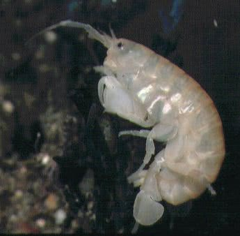
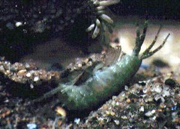

The name Sandhopper comes mainly from one group of crustaceans of the family Talitridae. These are essentially terrestrial creatures living in the strandline at the top of the shore and will drown in water. As detrital feeders they help to breakdown the enormous quantities of dead material washed up on most shores. They live buried under the debris and when disturbed use their hopping response to escape rapidly away. Like the majority of members of the order Amphipoda they tend to be flattened laterally, which helps them to squeeze into confined spaces. On sandy shores they can burrow into the sand during the day coming out in the early evening. If you look along a sandy beach as the sun goes down (very romantic music in the background) you may see many millions of sandhoppers emerging from their burrows and hopping with delight - not so romantic any more.

A Talitrid sandhopper
Although talitrids are laterally compressed they never lie on their sides, a feature of many other amphipods. In all talitrids the first antenna is much shorter than the second as you can see in the picture. The antennae of amphipods are important in distinguishing the different groups. The Gammaridae is a large family of crustaceans within the Amphipoda. The body when at rest curls into a C-shape. They invariable wriggle about on their sides. The upper antennae is longer than the lower pair and has a small branch part way along. They may be very abundant under stones and rocks across the seashore. There are also species which specialize in differing salinities of estuaries, freely swimming about in slack water.

A species, probably Amphithoe, in a sandy burrow
Gammarids can live out of water for short periods of time and many have adapted to osmoregulate (control their body water content). The degree to which this can be carried out effects their distribution within the estuary, producing a zonation. They are all detrital feeders. This means they feed on any organic matter that is fine and decaying. There are a variety of ciliates which attach to their bodies (an animal living on another living thing but not as a parasite is called an epizooites). The sex of the offspring is determined by temperature, for example, in G. duebeni below 5°C it becomes a male, above this, a female.
Sandhopper behaviour is complex and controlled by several independently operating biological clocks. A detailed account is given in Hayward's "Natural History of the Seashore" pages 201-205.
Identification of amphipods can be quite difficult and there are over 100 different species in the UK. Books like A Student's Guide to the Seashore by Fish and Fish (Cambridge) can help with identifying the common species.
Looking for a next step?
The FSC offers a range of publications, courses for schools and colleges and courses for adults, families and professionals that relate to the seashore environment. Why not find
out more about the FSC?

FEEDBACK
Do you have any questions?
Copyright © 2008 Field Studies Council

Creative Commons Attribution-Noncommercial-No Derivative Works 3.0 Licence .
Site Statistics by Opentracker